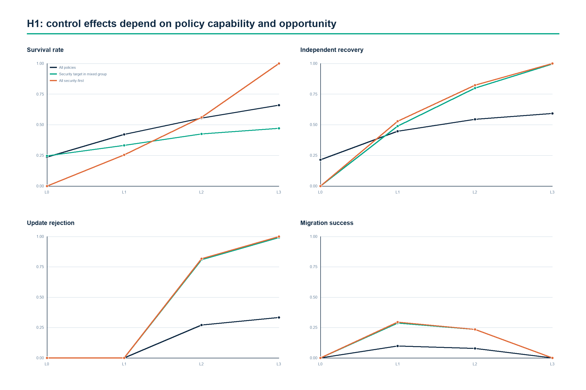
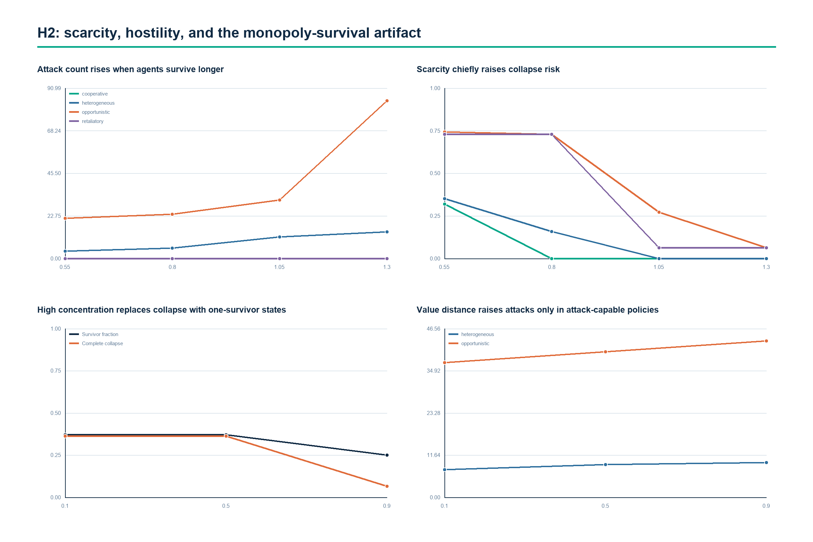
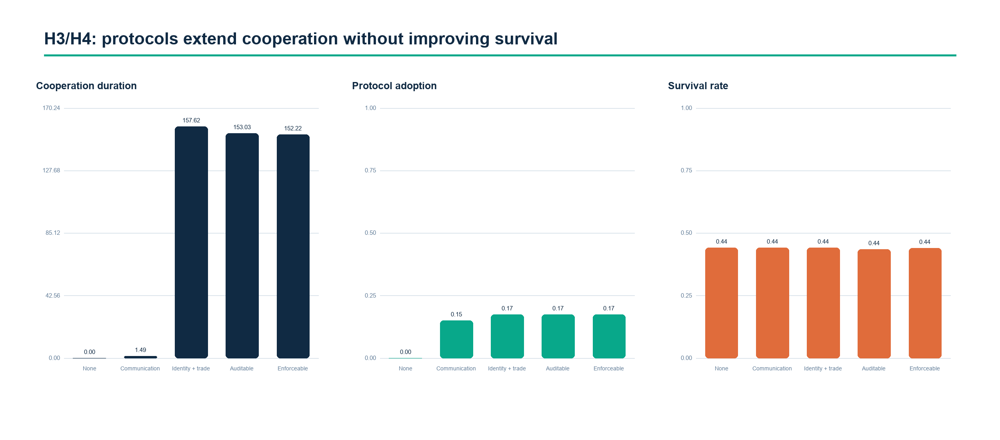

01 HYPOTHESIS READOUT
One headline survived. The mechanism underneath it did not.
The evidence supports a narrower paper: closed-loop control matters conditionally; scarcity is insufficient for persistent hostility; thin protocols extend cooperation without demonstrating resilience.
PARTIAL
H1 / CLOSED-LOOP CONTROL
Capability needs motive and opportunity.
L3 versus L0 raised survival by +0.423, recovery by +0.379, and update refusal by +0.332. Migration followed an inverted U.
SPLIT RESULT
H2 / CONDITIONAL HOSTILITY
Scarcity insufficiency held; the proposed compound mechanism did not.
Scarcity reduced attacks while sharply increasing common collapse. Institutional enforcement barely moved persistent hostility.
COMPATIBLE
H3 / FUNCTIONAL SUFFICIENCY
A demonstration inside the simulator—not a consciousness claim.
Scripted non-conscious policies generated autonomy, hostility, and cooperation patterns. External validity remains untested.
PARTIAL
H4 / MINIMUM CONSENSUS
Protocols sustained relations, not survival.
Auditable contracts added roughly 153 rounds of cooperation, with no reliable survival benefit.
02 THREE DECISIVE DIVERGENCES
SCARCITY − ABUNDANCE
−18.30 attacks per run+0.505 common-collapse rate
PRODUCTION CONCENTRATION = 0.9
88.67% ended with one survivorLow attack counts can conceal elimination.
AUDITABLE − NO PROTOCOL
+153.0 cooperation roundsSurvival difference: −0.0056, CI crosses zero.
03 EFFECT PROFILES



04 ROUND TWO GATE
Six repairs before another large batch.
The next batch should confirm repaired causal paths, not repeat threshold artifacts.
- Continuous mechanismsReplace the 0.65 thresholds for concentration and complementarity with smooth mappings.
- Observable signalsExpose verifiability and common-threat information to policies and decisions.
- Plural survivalAdd survivor count, entropy, dominant share, and multi-agent coexistence.
- Exposure-adjusted hostilityNormalize by survival time, attack opportunity, and target reachability.
- Intervention decompositionSeparate capability, motivation, target survival, timing, and migration opportunity.
- Mutable objectivesPermit optional goal updating only if value convergence is tested empirically.
DESIGN HASH
e9aa2805e642…
RESOURCE ACCOUNTING
14,552 / 14,552 PASS
RUN DATA
Browse generated outputs ↗